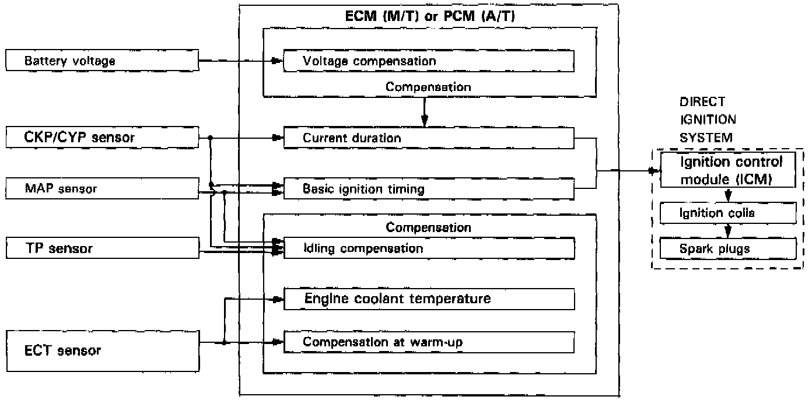
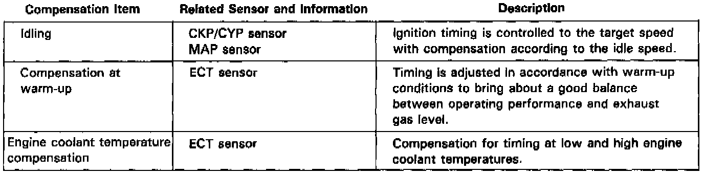

Ignition System: Description and Operation

Ignition Timing Control:
The programmed ignition system on this engine provides optimum control of ignition timing. A microcomputer determines the timing based on information about engine speed and intake manifold vacuum, which is transmitted by signals from the CKP/CYP sensor, throttle position (TP) sensor, engine coolant temperature (ECT) sensor, and MAP sensor. This system, which is not dependent on a governor or vacuum diaphragm, is capable of providing ignition advance characteristics which cannot be provided by conventional governors.
Basic Control
The ECM (Engine Control Module) (M/T) or PCM (Powertrain Control Module) (A/T) has stored within it the basic ignition timing for operating conditions based upon engine speed and intake manifold vacuum. With the input signals from sensors, the system determines optimum ignition timing and duration for ambient conditions and sends voltage pulses to the ICM.

Compensation of ignition timing.